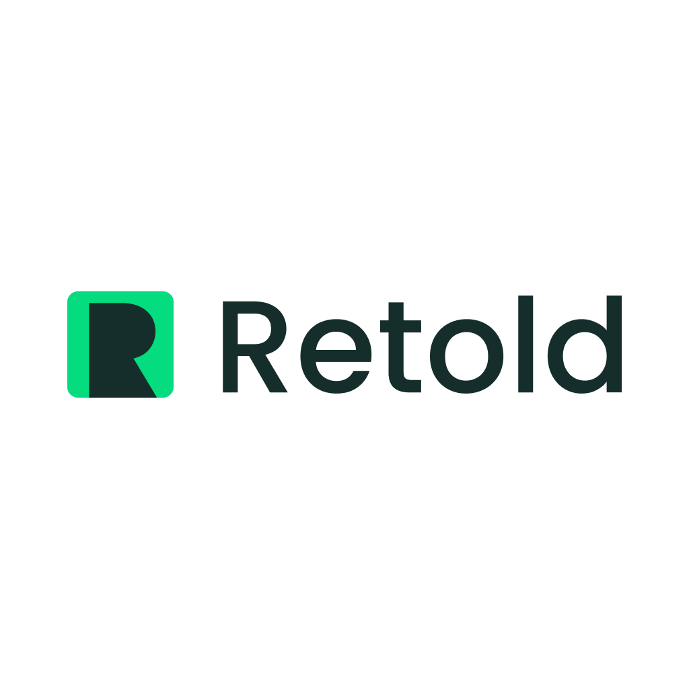

Retold é a galeria definitiva para criadores — um espaço onde seus projetos se tornam um portfólio visual vivo, e onde talento é reconhecido pelo que você construiu, não apenas pelo que escreveu.
200 currículos, 15 minutos, e um recrutador sem contexto técnico tentando adivinhar quem realmente é bom. Do outro lado, semanas de trabalho transformadas em blocos de texto que quase ninguém lê. Pessoas talentosas passam despercebidas. Empresas contratam errado. Todos perdem.
Imagine um espaço onde cada projeto seu tem sua própria página
visual: capa impactante, fotos e vídeos visíveis, descrição clara,
links funcionais.
Um layout que fala por você antes da entrevista começar. Seja você
um programador, videomaker, designer, historiador ou qualquer
profissão, Retold está aqui para você.
Transformamos a conversa sobre competência técnica — para quem cria e para quem contrata.
Foque em mostrar o que você realmente sabe fazer. Nós cuidamos de levar o seu trabalho até quem toma decisões.
Acabe com a triagem de centenas de PDFs genéricos. Tenha acesso a talentos já validados pelos projetos que entregam.
Se você é um profissional cansado de espalhar seu portfólio por vários
sites, ou uma empresa exausta de contratar apenas com base em
currículos, deixe seu e-mail.
Vamos compartilhar cada etapa da construção.